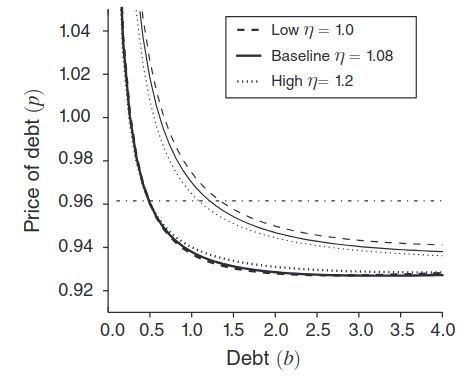

Intro to Heterogeneity
Macro II - Fluctuations - ENSAE, 2023-2024
2024-04-03
Mean Field Games and Heterogenous Agents Models
2012 Ben Moll did a talk at IMA (UK)

Economists and world class mathematicians exchanged on mean field games
- a class of mathematical problems which encompasses heterogenous agents models
- a bit math intense (stochastic calculus, viscosity theory, …)
Mean Field Games and Heterogenous Agents Models
2012 Ben Moll did a talk at IMA (UK)
Result: a new stream of heterogenous agents papers
PDE Models in Macroeconomics (2014) with Achdou, Bueary, Lasry, Lions
The Dynamics of Inequality (2016) with Gabaix, Lasry, Lions
Monetary Policy According to HANK (2018) with Kaplan and Violante
- that one was hugely successfull
Let’s have a look at the MPC distribution for France.1


Average MPC by Cash-on-Hand Percentiles
Apparently MPC is well predicted by Cash-in-hand (amount of money left to household after having made all compulsory payments).

Wealth distribution

Inequality, Leverage and Crisis, Kumhof, Rancière, Winant (2015)

Wealth Inequality
Increase in wealth inequality is consistent.
Preference for Wealth
The preference for wealth can be justified as:
- a preference for social status
- capitalist spirit
It implies a steady-state supply of lending for any income level:


Which in turn implies non-zero marginal propensity to save from a permanent income shock (in the short and the long run)
Parameters \(\eta\) and \(\varphi\) are not observed, but can be chosen in order to match real world MPC (50% for top earners).

Calibration

Inequality Shock